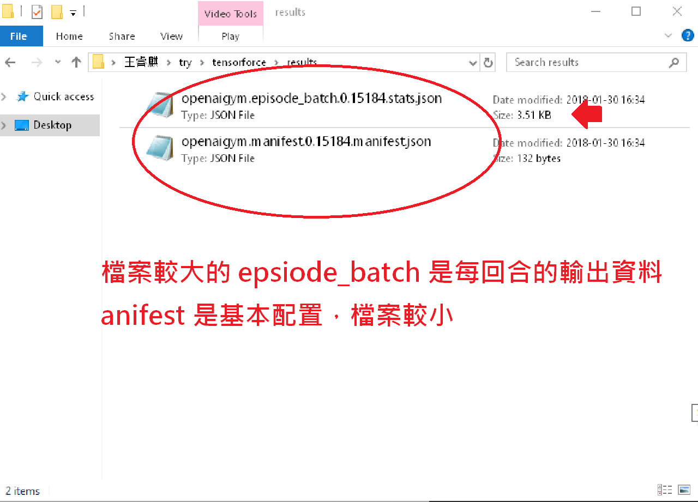
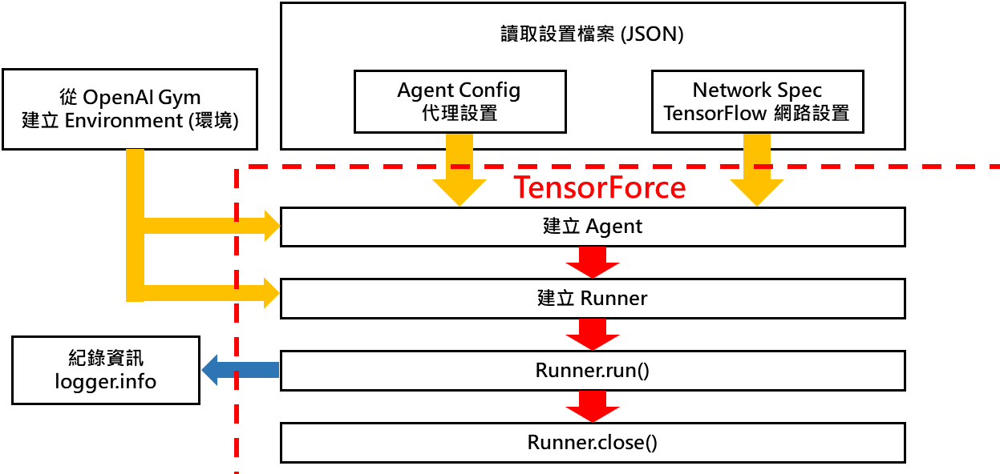
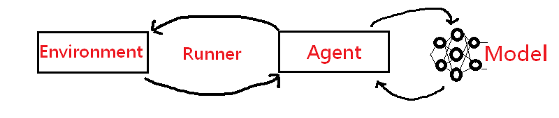
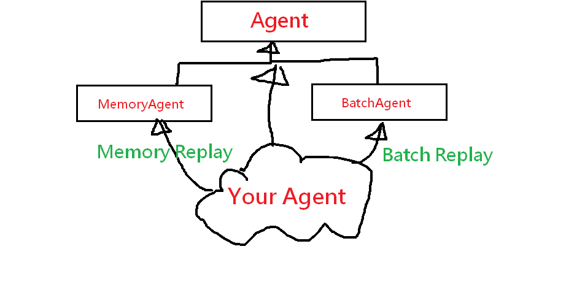

# 已有 tensorflow pip install tensorforce # 沒有 tensorflow + 與 tensorflow 一同安裝 pip install tensorforce[tf] # 務必更新, 否則可能會有 error pip install --upgrade tensorforce
gym 請先安裝，詳細見官網 GitHub - openai/gympip install gym
TensorForce 有提供 examplegit clone https://github.com/reinforceio/tensorforce.git cd tensorforce
--monitor ，方便檢視：results (windows)
mkdir results
python examples/openai_gym.py CartPole-v0^
-a examples/configs/vpg.json^
-n examples/configs/mlp2_network.json^
-e 100^
-m 5000^
--monitor results
json 檔案
epsiode_batch.json 內容大致如下
{"initial_reset_timestamp": 1517301297.9757686,
"timestamps": [1517301297.9968548, 1517301298.0198836, ... , 1517301299.1702468],
"episode_lengths": [14, 22, 29, 16, 15, ... , 28, 22, 24, 17, 21, 23],
"episode_rewards": [14.0, 22.0, 29.0, 16.0, ..., 21.0, 24.0, 40.0, 23.0],
"episode_types": ["t", "t", "t", "t", ... , "t", "t", "t", "t"]}
Environment 也就是 gym_idTensorFlow 被定義成 Model 讓 Agent 來初始化Runner 來進行 RL 訓練
import argparse # 1. 為了在 command-line 搭配不同 arg 執行 import json # 2. 讀取 Agent 以及 Network 設置 import logging # 3. 每個 epsiode 進行紀錄 import os # 4. 操作檔案路徑 import time # 5. 操作運算時間 from tensorforce import TensorForceError # 丟 Error from tensorforce.agents import Agent # 建立 Agent from tensorforce.execution import Runner # 建立 Runner from tensorforce.contrib.openai_gym import OpenAIGym # 建立 Env
monitor 相關參數主要是為了 OpenAI Gym 的設置
# 建立環境 Environment
environment = OpenAIGym(
gym_id=args.gym_id, # Gym ID 就是你的特定環境
monitor=args.monitor, # 是否要輸出 Gym Results
monitor_safe=args.monitor_safe, # 是否要避免蓋掉之前的 Results
monitor_video=args.monitor_video # 是否要每隔幾步輸出影片(危險!)
)
spec 結尾的函數是對 dict 字典資料的處理
if args.agent_config is not None:
with open(args.agent_config, 'r') as fp:
agent_config = json.load(fp=fp)
else:
raise TensorForceError("No agent configuration provided.")
if args.network_spec is not None:
with open(args.network_spec, 'r') as fp:
network_spec = json.load(fp=fp)
else:
network_spec = None
logger.info("No network configuration provided.")
{
"type": "vpg_agent", # RL Agent 名稱
"batch_size": 4000, # TensorFlow 中的 batch size
"optimizer": { # TensorFlow 中的 optimizer
"type": "adam", # TensorFlow 中的 optimize type
"learning_rate": 1e-2 # TensorFlow 中的 learning rate
},
"discount": 0.99, # TensorFlow 中的 discount factor
"entropy_regularization": null, # TensorFlow 中的... (略)
# ...(略)
}
networ_spec 讀取的 JSON 就是 TensorFlow Model 的設置：
{
"type": "conv2d", "size": 32, "window": 8, "stride": 4
},
... (略)
{
"type": "flatten"
},
{
"type": "dense", "size": 512
}
epsiode_finished 後面講 runner 會提到logger 輸出迭代資訊
def episode_finished(r):
if r.episode % report_episodes == 0:
steps_per_second = r.timestep / (time.time() - r.start_time)
logger.info("Finished episode {} after {} timesteps. Steps Per Second {}"
.format(r.agent.episode, r.episode_timestep, steps_per_second
))
return True
rnuner.run 即可，並且搭配 close 完成整個流程
runner.run(
timesteps=args.timesteps,
episodes=args.episodes,
max_episode_timesteps=args.max_episode_timesteps,
deterministic=args.deterministic,
episode_finished=episode_finished
)
runner.close()
Runner 以及 ModelDouble-DQN 就有兩個 Q-Model
DQNAgentMemoryAgentBatchAgent
Agent 本身主要放參數，詳細請見 DQNAgent.py - GitHub
class DQNAgent(MemoryAgent):
def __init__(
# Agent 的參數
self, states_spec, actions_spec, batched_observe=None, scope='dqn', ...
# Learning 的參數
summary_spec=None, network_spec=None, device=None, ...
# DQNAgent 的特殊參數
target_sync_frequency=10000, target_update_weight=1.0,
double_q_model=False, huber_loss=None, ...
Agent 來可以定義 Model 初始化函數 initialize_model
def initialize_model(self):
return QModel(
states_spec=self.states_spec,
actions_spec=self.actions_spec,
network_spec=self.network_spec,
...
double_q_model=self.double_q_model,
huber_loss=self.huber_loss,
random_sampling_fix=True
)
Thank You !